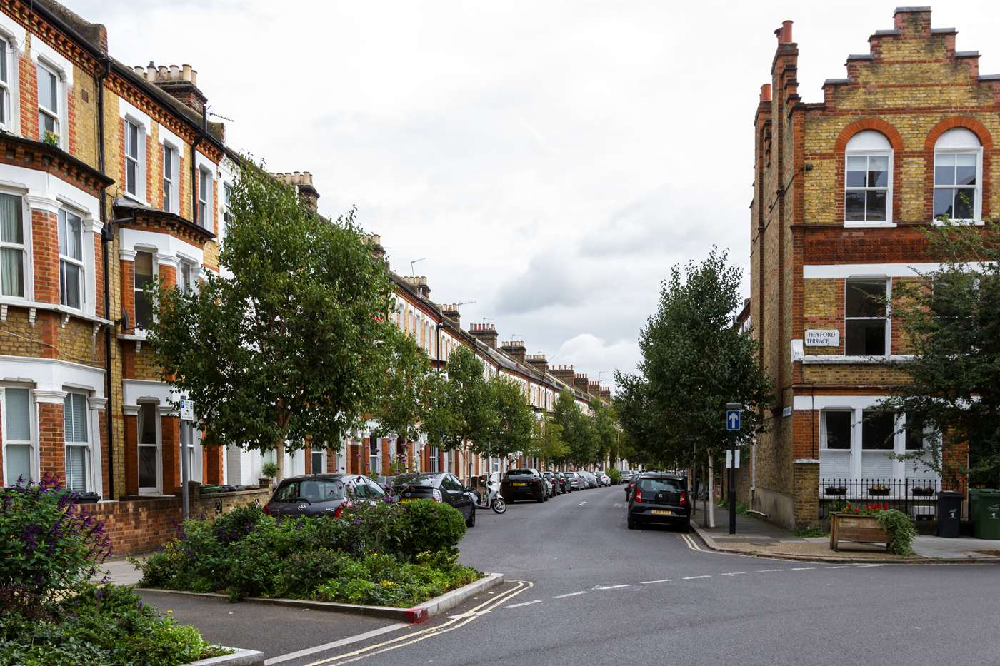

“런던은 비싸다”는 말은 영국 유학 상담에서 거의 전제처럼 쓰입니다. 학부 학비만 놓고 보면 반대에 가깝습니다. 저희가 정리한 49개 대학에서 런던 13곳의 학부 학비 중앙값은 £21,990이었고, 런던 밖 34곳은 £24,600이었습니다. 지역이 실제로 정하는 것은 따로 있었습니다.
런던은 비싼 동네가 아니라 폭이 가장 넓은 동네입니다
런던 13곳의 학부 학비는 £17,200에서 £42,700까지 벌어집니다. 같은 도시 안에 임페리얼이 있고 미들섹스 £17,200과 웨스트민스터 £17,600도 있습니다. 13곳 중 8곳이 런던 밖 중앙값보다 쌉니다. 런던이 비싸다는 인상은 런던 전체가 아니라 이름이 알려진 몇 곳에서 옵니다.
| 런던 소재 대학 (하단 학비 오름차순) | QS 2027 | 학부 연간 학비 |
|---|---|---|
| 미들섹스 | 미표기 | £17,200 |
| 웨스트민스터 | 미표기 | £17,600 |
| 버크벡 | 388 | £18,500 |
| 로열수의과대학 | 미표기 | £18,870~47,960 |
| 브루넬 | 385 | £19,320~21,795 |
| 시티세인트조지스 | 310 | £19,500~27,000 |
| SOAS | 미표기 | £21,990~23,990 |
| 골드스미스 | 미표기 | £22,000~30,500 |
| 퀸메리 | 110 | £25,000~29,950 |
| 킹스칼리지런던 | 31 | £27,100~35,800 |
| LSE | 56 | £28,900~39,900 |
| UCL | 9 | £32,000~42,700 |
| 임페리얼 | 2 | £42,700~45,500 |
표에 한 가지 단서를 답니다. 대학마다 공시 시점이 다릅니다. 미들섹스는 £17,200을 2025-26 요금으로 올려 두었고 2026-27은 아직 게시하지 않았습니다. 하단 학교들의 숫자는 2026-27 확정값이 아니라 현재 공시된 값으로 보시는 편이 맞습니다.
석사로 올라가면 이 차이가 사라집니다
같은 49곳을 석사 기준으로 다시 세면 런던 £25,410, 런던 밖 £25,000입니다. 사실상 같은 숫자입니다. 학부에서 보이던 격차가 석사에는 없습니다. 지역으로 학비를 짐작하는 방식은 학부에서는 틀리고 석사에서는 아무것도 알려주지 않습니다.
지역이 정하는 것은 비자가 요구하는 생활비입니다
학생비자를 낼 때는 학비와 별도로 생활비를 증빙해야 합니다. 이 금액은 지역으로 정해져 있습니다. 런던은 월 £1,529, 런던 밖은 월 £1,171이고 최대 9개월치입니다. 1년으로 보면 £13,761과 £10,539이고, 차이는 £3,222입니다.
이 금액은 실제로 쓰는 돈이 아니라 계좌에 있어야 하는 돈입니다. 실제 지출은 이보다 많을 수도 적을 수도 있습니다. 다만 비자 단계에서 반드시 넘어야 하는 선이라 예산의 바닥으로 삼기에 좋습니다.

이 숫자는 대학 페이지가 아니라 GOV.UK에서 확인하시는 편이 안전합니다. 낡은 값을 그대로 두는 곳이 있습니다. 더럼의 국제학생 센터는 런던 밖 기준을 아직 £1,136으로 안내하고 있는데, 이건 예전 금액입니다.
합쳐서 보면 순서가 바뀝니다
런던의 미들섹스가 런던 밖 중앙값 학교보다 £4,178 낮습니다. 학비만 비교하면 런던 쪽이 £7,400 싼데, 런던 생활비가 그중 £3,222를 되가져갑니다. 그러고도 남는 금액만큼은 여전히 런던 쪽이 쌉니다. 다만 총액 최저는 런던 밖이고, 그 차이도 작지 않습니다.
이름이 곧 소재지는 아닙니다
비자 기준에서 런던은 시티오브런던과 32개 자치구를 뜻합니다. 학교 이름이 아니라 캠퍼스 위치를 따릅니다. 로열홀로웨이는 University of London 소속이지만 캠퍼스가 서리주 에검에 있어서 낮은 쪽 금액을 증빙합니다. 예산을 세우기 전에 캠퍼스가 어디인지부터 보셔야 합니다.
그래서 무엇을 비교해야 하나
지역은 학비를 짐작하는 근거가 되지 못합니다. 학부에서는 런던 안에 가장 싼 축과 가장 비싼 축이 함께 있고, 석사에서는 차이 자체가 없습니다. 지역이 고정하는 것은 생활비뿐이고 그 차이는 연 £3,222입니다.
학비를 실제로 가르는 것은 전공입니다. 한 학교 안에서만 £25,440이 벌어지기도 합니다. 그 이야기는 학부 학비 글에서 따로 다뤘습니다.